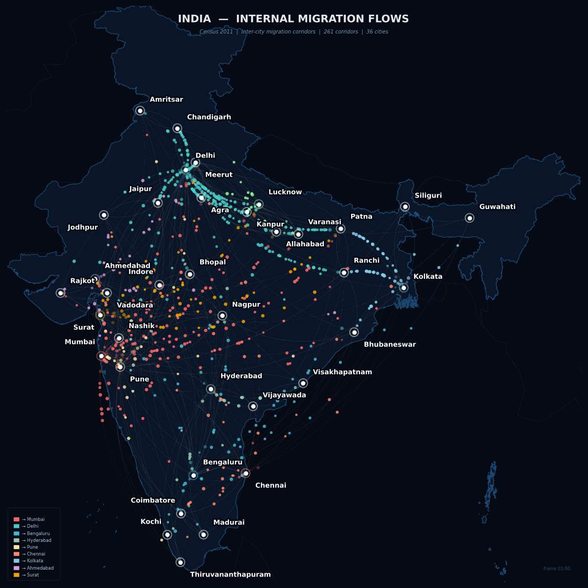

Animated particle visualisation of inter-city migration across 36 cities — Census 2011 data via Kaggle
Where do people move within India? This project animates inter-city migration flows as glowing particles travelling along curved Bezier arc paths on a dark India map. Based on Census 2011 migration data from Kaggle, 261 corridors across 36 cities are visualised — each particle colour representing its destination city.
Each glowing dot travels from its origin city to its destination along a curved arc. Colour = destination city. Dot density = migration volume.

India internal migration flows — Census 2011 (Kaggle) — 36 cities • 261 corridors • looping GIF at 22 fps
Top 15 corridors by volume. State totals from Kaggle, disaggregated to city pairs using urban population weights.
| # | Origin | Destination | People | Volume |
|---|---|---|---|---|
| 1 | Patna | Delhi | 10,39,047 | |
| 2 | Patna | Mumbai | 8,16,394 | |
| 3 | Ranchi | Delhi | 6,86,456 | |
| 4 | Patna | Kolkata | 6,67,959 | |
| 5 | Kanpur | Delhi | 6,41,741 | |
| 6 | Ranchi | Mumbai | 5,43,480 | |
| 7 | Ranchi | Kolkata | 5,32,809 | |
| 8 | Chandigarh | Delhi | 5,19,524 | |
| 9 | Lucknow | Delhi | 5,13,393 | |
| 10 | Patna | Surat | 4,45,306 | |
| 11 | Jaipur | Delhi | 4,21,664 | |
| 12 | Agra | Delhi | 4,17,131 | |
| 13 | Kanpur | Mumbai | 4,01,088 | |
| 14 | Varanasi | Delhi | 3,85,044 | |
| 15 | Allahabad | Delhi | 3,52,957 |
9 of the top 15 corridors flow into Delhi. UP and Bihar together send over 32 lakh migrants to Delhi, driven by employment in services, construction and government. Patna → Delhi alone accounts for 10.4 lakh people.
Patna appears in 4 of the top 10 corridors — to Delhi, Mumbai, Kolkata and Surat. Bihar's capital acts as a migration hub, channelling workers from the Gangetic plains into every major metro.
Patna → Surat (4.4 lakh) highlights Gujarat's massive demand for labour in textiles and diamonds. This is one of India's most economically significant corridors but rarely discussed in mainstream migration discourse.
Southern flows converge on Bengaluru from Chennai, Hyderabad, Kochi and Coimbatore. The IT boom created a unique intra-southern migration cluster that mirrors the UP → Delhi pattern in the north.
Core Bezier particle system — how particles travel along curved arcs:
# Quadratic Bezier arc between two city coordinates def bezier_curve(p0, p1, ctrl_offset=0.25): mid = (p0 + p1) / 2 dx, dy = p1[0]-p0[0], p1[1]-p0[1] length = np.sqrt(dx**2 + dy**2) perp = np.array([-dy, dx]) / (length + 1e-9) ctrl = mid + perp * length * ctrl_offset t = np.linspace(0, 1, 100) return (np.outer((1-t)**2, p0) + np.outer(2*(1-t)*t, ctrl) + np.outer(t**2, p1)) # Particle fades in at origin, travels arc, fades out at dest def get_positions(frame, n_frames, particles): t_global = frame / n_frames for p in particles: t = (t_global + p["phase"]) % 1.0 alpha = t/0.1 if t<0.1 else (1-t)/0.15 if t>0.85 else 1.0 idx = int(t * (len(curve) - 1)) yield curve[idx], alpha * 0.85